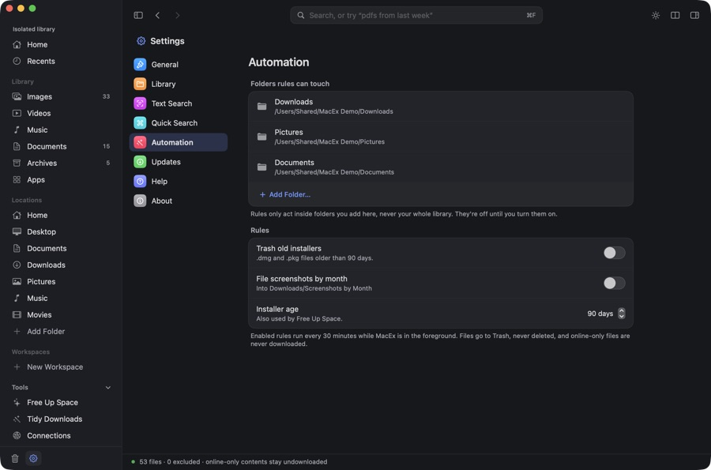
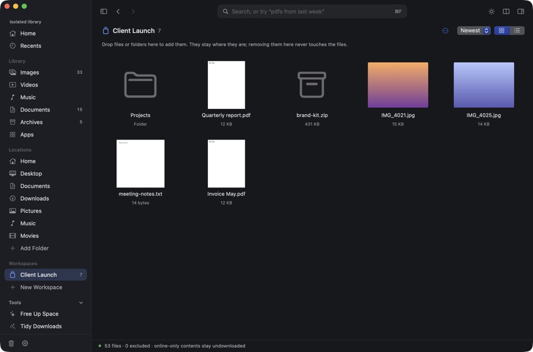

Mac file automation, Shortcuts and quick access
Updated
A library that sorts itself
MacEx reads your Desktop, Documents, Downloads, Pictures, Music, Movies and app folders, plus up to eight folders you add. It sorts every file into Images, Videos, Music, Documents, Archives and Apps. Files stay exactly where they are; the library is a view, not a new folder structure. New and changed files show up automatically.
Tidy Downloads
Choose Tidy Downloads in the sidebar. MacEx proposes moving the loose files at the top of your Downloads folder into Images, Videos, Music, Documents, Archives and Installers folders, and shows the plan first. Files still downloading, online-only files and unknown kinds stay put. Existing files are never replaced, and ⌘Z puts everything back. How to clean up your Downloads folder
Automation rules

MacEx has two rules:
- Trash old installers moves
.dmgand.pkgfiles older than the age you choose (90 days by default) to the Trash. - File screenshots by month moves screenshots into
Screenshots by Month/YYYY-MMfolders inside the first folder in the list.
Both are off until you turn them on, and each asks for confirmation. They act only inside folders you add in Settings › Automation, never your whole library. Enabled rules run every 30 minutes while MacEx is in the foreground. Files go to the Trash, never deleted, existing files are never overwritten, and online-only files are never downloaded.
Limits: these are the only two rules. There is no rule builder. For anything else, use the Shortcuts actions below, or macOS Folder Actions and Shortcuts.
Tags and workspaces

Finder tags work in both directions: tags from Finder appear in the MacEx sidebar, and tags you add in MacEx show in Finder. Select many files, right-click and choose Tags to tag them all at once.
Workspaces are sidebar pages for a project, a client or a trip. Add files and folders from anywhere by dropping them on the page, or with Add to Workspace in the right-click menu. Items are bookmarks, so the files stay where they are. If one is moved or deleted, the workspace shows it as unavailable.
Shortcuts, Siri and the menu bar
- Shortcuts actions. MacEx adds Find Files, Search in MacEx and Get Latest Download to the Shortcuts app, so you can use them in your own shortcuts or ask Siri.
- Links. A link such as
macex://search?query=pdfs from last weekopens that search in MacEx, from a note, a script or a launcher. - Quick Search. ⇧⌘Space brings MacEx forward from any app with the search field ready. Change the shortcut in Settings › Quick Search, and turn on Open at login so it works after a restart.
- Menu bar. An optional menu bar item lists your ten newest downloads with thumbnails. Drag one straight into an email, or click to preview it in MacEx.
- Keyboard shortcuts. Press ⌘/ in MacEx to see every shortcut. Full shortcut list
When to use it
- Your Downloads folder fills with installers you used once: turn on Trash old installers for Downloads.
- You take dozens of screenshots a week: let File screenshots by month keep the Desktop clear.
- You attach your last download to a lot of messages: drag it from the menu bar.
- You want a keyboard launcher to search your files: point it at a
macex://searchlink.
Related
MacEx runs on macOS 14 or later, Apple silicon and Intel. One-time purchase, no account, no subscription.